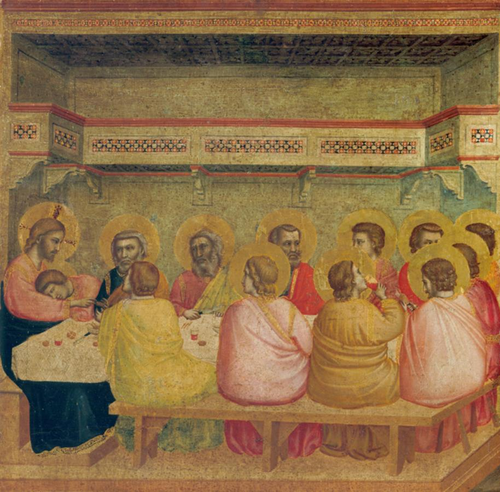
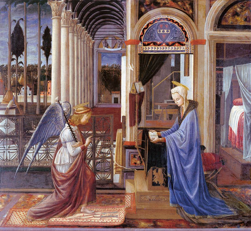
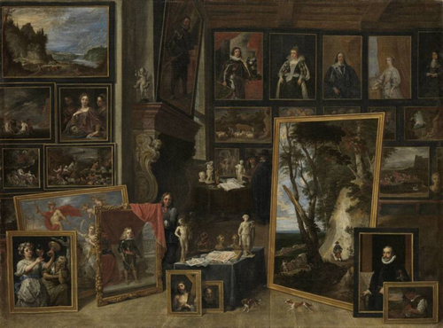
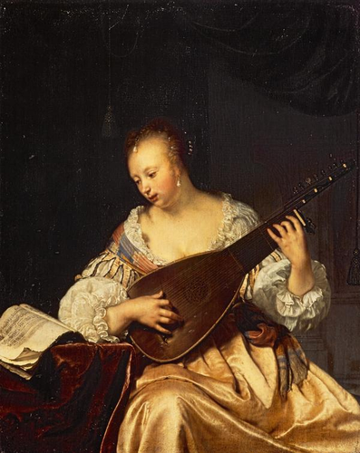
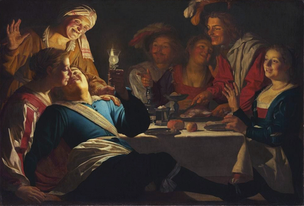
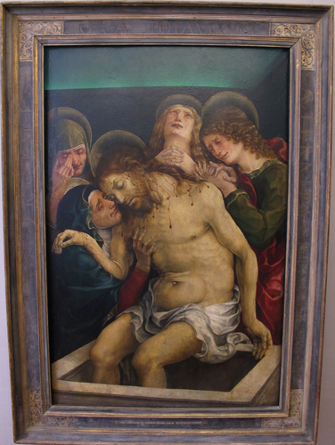
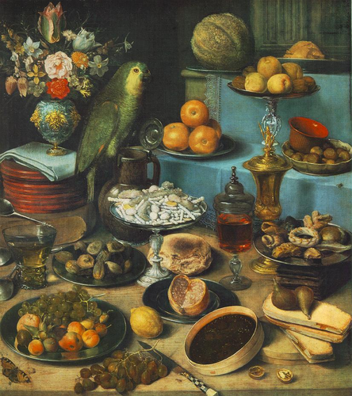

Activity A: Paintings catalogue in Jupyter Notebook
Objective: Make a selection of nine paintings for the exhibition catalogue to be selected from Wikidata and rendered multi-format in Quarto.
The below Python code uses SPARQLWrapper to retrieve data from Wikidata based on a SPARQL query.
Wikidata link: http://www.wikidata.org/entity/Q29474642
Title: The Birth of Benjamin
Year: 1650
Creator: Francesco Furini
Copyright: public domain

Wikidata link: http://www.wikidata.org/entity/Q29474649
Title: A Cynical Philosopher
Year: 1650
Creator: Luca Giordano
Copyright: public domain
Wikidata link: http://www.wikidata.org/entity/Q29474651
Title: Solomon and the Queen of Sheba
Year: 1697
Creator: Luca Giordano
Copyright: public domain

Wikidata link: http://www.wikidata.org/entity/Q29477235
Title: Q29477235
Year: 1674
Creator: Antonio Triva
Copyright: public domain

Wikidata link: http://www.wikidata.org/entity/Q29477863
Title: Q29477863
Year: 1633
Creator: Guido Reni
Copyright: public domain

Wikidata link: http://www.wikidata.org/entity/Q29477898
Title: Still-Life with Books
Year: 1628
Creator: Jan Lievens
Copyright: public domain

Wikidata link: http://www.wikidata.org/entity/Q29480557
Title: Feast of Herod
Year: 1630
Creator: http://www.wikidata.org/.well-known/genid/3f945710e81609ba4bae458b2820460a
Copyright: public domain

Wikidata link: http://www.wikidata.org/entity/Q29480565
Title: Venus and Cupid
Year: 1625
Creator: Heinrich Bollandt
Copyright: public domain
Wikidata link: http://www.wikidata.org/entity/Q29480594
Title: Still-life with Parrot
Year: 1630
Creator: Georg Flegel
Copyright: public domain
